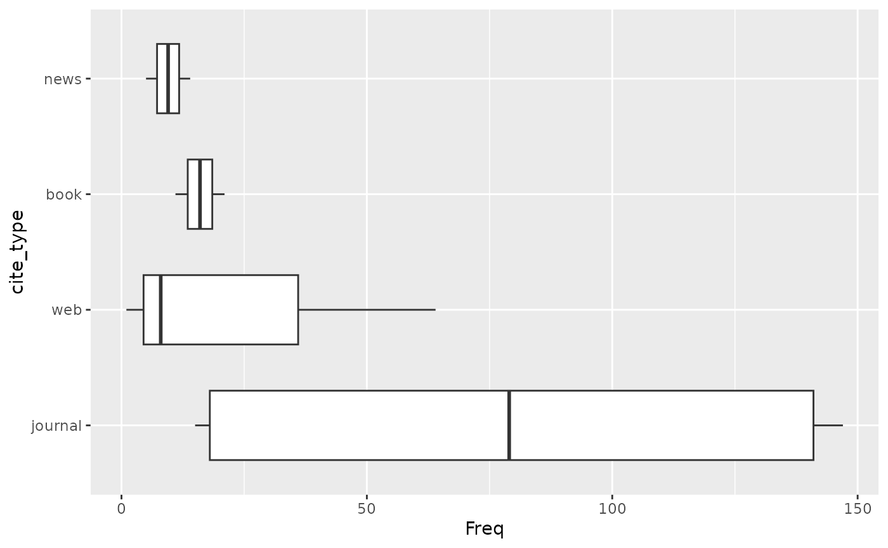
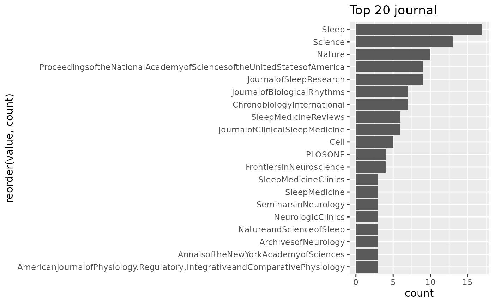
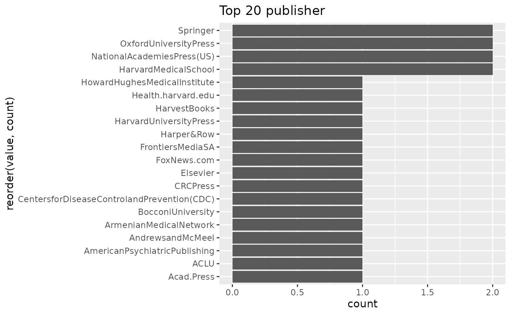
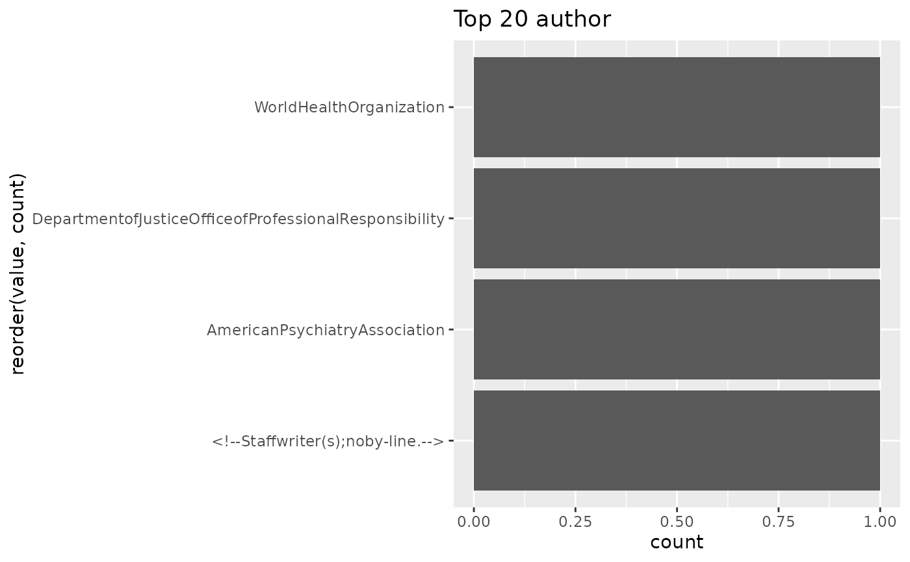

Introduction
This vignette demonstrates how to extract, count, parse, and visualise citations from Wikipedia articles using wikilite. We will work with a small set of articles about sleep science to illustrate each step.
Fetch article data
library(wikilite)
articles <- c("Zeitgeber",
"Advanced sleep phase disorder",
"Sleep deprivation",
"Circadian rhythm")
# Most recent revision of each article
recent <- get_category_articles_most_recent(articles)Count citations using built-in patterns
The package stores all built-in regular expressions in the
pkg.env environment. You can inspect them:
names(pkg.env$regexp_list)
#> [1] "doi_regexp" "isbn_regexp" "url_regexp"
#> [4] "wikihyperlink_regexp" "tweet_regexp" "news_regexp"
#> [7] "magazine_regexp" "journal_regexp" "web_regexp"
#> [10] "article_regexp" "report_regexp" "press_release_regexp"
#> [13] "court_regexp" "patent_regexp" "conference_regexp"
#> [16] "thesis_regexp" "arxiv_regexp" "encyclopedia_regexp"
#> [19] "av_media_regexp" "episode_regexp" "podcast_regexp"
#> [22] "book_regexp" "pmid_regexp" "ref_in_text_regexp"
#> [25] "ref_regexp" "cite_regexp" "template_regexp"Apply a single pattern:
doi_regexp <- pkg.env$doi_regexp
dois <- get_regex_citations_in_wiki_table(recent, doi_regexp)
head(dois)
#> art revid citation_fetched
#> 1 Zeitgeber 1330736183 10.1001/archpsyc.1988.01800340076012
#> 2 Zeitgeber 1330736183 10.1016/j.cpr.2006.07.001
#> 3 Zeitgeber 1330736183 10.1016/j.cub.2006.12.011
#> 4 Zeitgeber 1330736183 10.1016/0031-9384(92)90188-8
#> 5 Zeitgeber 1330736183 10.47102/annals-acadmedsg.V37N8p662
#> 6 Zeitgeber 1330736183 10.1016/j.tics.2010.03.007Apply every pattern at once and receive a named list:
all_results <- extract_citations_regexp(recent)
# Each element is a data frame with art, revid, citation_fetched
sapply(all_results, nrow)
#> doi_regexp isbn_regexp url_regexp
#> 314 52 199
#> wikihyperlink_regexp tweet_regexp news_regexp
#> 604 0 19
#> magazine_regexp journal_regexp web_regexp
#> 0 320 73
#> article_regexp report_regexp press_release_regexp
#> 0 1 1
#> court_regexp patent_regexp conference_regexp
#> 0 0 1
#> thesis_regexp arxiv_regexp encyclopedia_regexp
#> 0 0 0
#> av_media_regexp episode_regexp podcast_regexp
#> 0 0 0
#> book_regexp pmid_regexp ref_in_text_regexp
#> 32 594 301
#> ref_regexp cite_regexp template_regexp
#> 444 447 0Count individual elements per article
results <- lapply(seq_len(nrow(recent)), function(i) {
text <- recent$`*`[i]
data.frame(
art = recent$art[i],
n_doi = get_doi_count(text),
n_isbn = get_ISBN_count(text),
n_url = get_urlCount(text),
n_ref = get_refCount(text),
n_hyperlinks = get_hyperlinkCount(text),
sci_score = get_sci_score(text)
)
})
count_table <- do.call(rbind, results)
count_table
#> art n_doi n_isbn n_url n_ref n_hyperlinks sci_score
#> 1 Zeitgeber 13 0 3 16 33 1.0000000
#> 2 Advanced sleep phase disorder 19 0 3 20 52 0.9500000
#> 3 Sleep deprivation 138 40 152 243 247 0.5791667
#> 4 Circadian rhythm 144 12 41 165 272 0.8546512Parse Citation Style 1 templates
parse_article_ALL_citations() splits every CS1 template
into a tidy long data frame where each row is one field:
# For a single article
zeitgeber_recent <- recent[recent$art == "Zeitgeber", ]
parsed_one <- parse_article_ALL_citations(zeitgeber_recent$`*`)
head(parsed_one)
#> type
#> journal |doi=10.1001/archpsyc.1988.01800340076012|title=Social Zeitgebers and Biological Rhythms|year=1988|last1=Ehlers|first1=Cindy L.|last2=Frank|first2=E.|last3=Kupfer|first3=D. J.|journal=Archives of General Psychiatry|volume=45|issue=10|pages=948–52|pmid=30482261 journal
#> journal |doi=10.1001/archpsyc.1988.01800340076012|title=Social Zeitgebers and Biological Rhythms|year=1988|last1=Ehlers|first1=Cindy L.|last2=Frank|first2=E.|last3=Kupfer|first3=D. J.|journal=Archives of General Psychiatry|volume=45|issue=10|pages=948–52|pmid=30482262 journal
#> journal |doi=10.1001/archpsyc.1988.01800340076012|title=Social Zeitgebers and Biological Rhythms|year=1988|last1=Ehlers|first1=Cindy L.|last2=Frank|first2=E.|last3=Kupfer|first3=D. J.|journal=Archives of General Psychiatry|volume=45|issue=10|pages=948–52|pmid=30482263 journal
#> journal |doi=10.1001/archpsyc.1988.01800340076012|title=Social Zeitgebers and Biological Rhythms|year=1988|last1=Ehlers|first1=Cindy L.|last2=Frank|first2=E.|last3=Kupfer|first3=D. J.|journal=Archives of General Psychiatry|volume=45|issue=10|pages=948–52|pmid=30482264 journal
#> journal |doi=10.1001/archpsyc.1988.01800340076012|title=Social Zeitgebers and Biological Rhythms|year=1988|last1=Ehlers|first1=Cindy L.|last2=Frank|first2=E.|last3=Kupfer|first3=D. J.|journal=Archives of General Psychiatry|volume=45|issue=10|pages=948–52|pmid=30482265 journal
#> journal |doi=10.1001/archpsyc.1988.01800340076012|title=Social Zeitgebers and Biological Rhythms|year=1988|last1=Ehlers|first1=Cindy L.|last2=Frank|first2=E.|last3=Kupfer|first3=D. J.|journal=Archives of General Psychiatry|volume=45|issue=10|pages=948–52|pmid=30482266 journal
#> id_cite
#> journal |doi=10.1001/archpsyc.1988.01800340076012|title=Social Zeitgebers and Biological Rhythms|year=1988|last1=Ehlers|first1=Cindy L.|last2=Frank|first2=E.|last3=Kupfer|first3=D. J.|journal=Archives of General Psychiatry|volume=45|issue=10|pages=948–52|pmid=30482261 1
#> journal |doi=10.1001/archpsyc.1988.01800340076012|title=Social Zeitgebers and Biological Rhythms|year=1988|last1=Ehlers|first1=Cindy L.|last2=Frank|first2=E.|last3=Kupfer|first3=D. J.|journal=Archives of General Psychiatry|volume=45|issue=10|pages=948–52|pmid=30482262 1
#> journal |doi=10.1001/archpsyc.1988.01800340076012|title=Social Zeitgebers and Biological Rhythms|year=1988|last1=Ehlers|first1=Cindy L.|last2=Frank|first2=E.|last3=Kupfer|first3=D. J.|journal=Archives of General Psychiatry|volume=45|issue=10|pages=948–52|pmid=30482263 1
#> journal |doi=10.1001/archpsyc.1988.01800340076012|title=Social Zeitgebers and Biological Rhythms|year=1988|last1=Ehlers|first1=Cindy L.|last2=Frank|first2=E.|last3=Kupfer|first3=D. J.|journal=Archives of General Psychiatry|volume=45|issue=10|pages=948–52|pmid=30482264 1
#> journal |doi=10.1001/archpsyc.1988.01800340076012|title=Social Zeitgebers and Biological Rhythms|year=1988|last1=Ehlers|first1=Cindy L.|last2=Frank|first2=E.|last3=Kupfer|first3=D. J.|journal=Archives of General Psychiatry|volume=45|issue=10|pages=948–52|pmid=30482265 1
#> journal |doi=10.1001/archpsyc.1988.01800340076012|title=Social Zeitgebers and Biological Rhythms|year=1988|last1=Ehlers|first1=Cindy L.|last2=Frank|first2=E.|last3=Kupfer|first3=D. J.|journal=Archives of General Psychiatry|volume=45|issue=10|pages=948–52|pmid=30482266 1
#> variable
#> journal |doi=10.1001/archpsyc.1988.01800340076012|title=Social Zeitgebers and Biological Rhythms|year=1988|last1=Ehlers|first1=Cindy L.|last2=Frank|first2=E.|last3=Kupfer|first3=D. J.|journal=Archives of General Psychiatry|volume=45|issue=10|pages=948–52|pmid=30482261 doi
#> journal |doi=10.1001/archpsyc.1988.01800340076012|title=Social Zeitgebers and Biological Rhythms|year=1988|last1=Ehlers|first1=Cindy L.|last2=Frank|first2=E.|last3=Kupfer|first3=D. J.|journal=Archives of General Psychiatry|volume=45|issue=10|pages=948–52|pmid=30482262 title
#> journal |doi=10.1001/archpsyc.1988.01800340076012|title=Social Zeitgebers and Biological Rhythms|year=1988|last1=Ehlers|first1=Cindy L.|last2=Frank|first2=E.|last3=Kupfer|first3=D. J.|journal=Archives of General Psychiatry|volume=45|issue=10|pages=948–52|pmid=30482263 year
#> journal |doi=10.1001/archpsyc.1988.01800340076012|title=Social Zeitgebers and Biological Rhythms|year=1988|last1=Ehlers|first1=Cindy L.|last2=Frank|first2=E.|last3=Kupfer|first3=D. J.|journal=Archives of General Psychiatry|volume=45|issue=10|pages=948–52|pmid=30482264 last1
#> journal |doi=10.1001/archpsyc.1988.01800340076012|title=Social Zeitgebers and Biological Rhythms|year=1988|last1=Ehlers|first1=Cindy L.|last2=Frank|first2=E.|last3=Kupfer|first3=D. J.|journal=Archives of General Psychiatry|volume=45|issue=10|pages=948–52|pmid=30482265 first1
#> journal |doi=10.1001/archpsyc.1988.01800340076012|title=Social Zeitgebers and Biological Rhythms|year=1988|last1=Ehlers|first1=Cindy L.|last2=Frank|first2=E.|last3=Kupfer|first3=D. J.|journal=Archives of General Psychiatry|volume=45|issue=10|pages=948–52|pmid=30482266 last2
#> value
#> journal |doi=10.1001/archpsyc.1988.01800340076012|title=Social Zeitgebers and Biological Rhythms|year=1988|last1=Ehlers|first1=Cindy L.|last2=Frank|first2=E.|last3=Kupfer|first3=D. J.|journal=Archives of General Psychiatry|volume=45|issue=10|pages=948–52|pmid=30482261 10.1001/archpsyc.1988.01800340076012
#> journal |doi=10.1001/archpsyc.1988.01800340076012|title=Social Zeitgebers and Biological Rhythms|year=1988|last1=Ehlers|first1=Cindy L.|last2=Frank|first2=E.|last3=Kupfer|first3=D. J.|journal=Archives of General Psychiatry|volume=45|issue=10|pages=948–52|pmid=30482262 Social Zeitgebers and Biological Rhythms
#> journal |doi=10.1001/archpsyc.1988.01800340076012|title=Social Zeitgebers and Biological Rhythms|year=1988|last1=Ehlers|first1=Cindy L.|last2=Frank|first2=E.|last3=Kupfer|first3=D. J.|journal=Archives of General Psychiatry|volume=45|issue=10|pages=948–52|pmid=30482263 1988
#> journal |doi=10.1001/archpsyc.1988.01800340076012|title=Social Zeitgebers and Biological Rhythms|year=1988|last1=Ehlers|first1=Cindy L.|last2=Frank|first2=E.|last3=Kupfer|first3=D. J.|journal=Archives of General Psychiatry|volume=45|issue=10|pages=948–52|pmid=30482264 Ehlers
#> journal |doi=10.1001/archpsyc.1988.01800340076012|title=Social Zeitgebers and Biological Rhythms|year=1988|last1=Ehlers|first1=Cindy L.|last2=Frank|first2=E.|last3=Kupfer|first3=D. J.|journal=Archives of General Psychiatry|volume=45|issue=10|pages=948–52|pmid=30482265 Cindy L.
#> journal |doi=10.1001/archpsyc.1988.01800340076012|title=Social Zeitgebers and Biological Rhythms|year=1988|last1=Ehlers|first1=Cindy L.|last2=Frank|first2=E.|last3=Kupfer|first3=D. J.|journal=Archives of General Psychiatry|volume=45|issue=10|pages=948–52|pmid=30482266 FrankParse all articles at once:
parsed <- get_parsed_citations(recent)
# Columns: art, revid, type, id_cite, variable, value
head(parsed)
#> art
#> journal |doi=10.1001/archpsyc.1988.01800340076012|title=Social Zeitgebers and Biological Rhythms|year=1988|last1=Ehlers|first1=Cindy L.|last2=Frank|first2=E.|last3=Kupfer|first3=D. J.|journal=Archives of General Psychiatry|volume=45|issue=10|pages=948–52|pmid=30482261 Zeitgeber
#> journal |doi=10.1001/archpsyc.1988.01800340076012|title=Social Zeitgebers and Biological Rhythms|year=1988|last1=Ehlers|first1=Cindy L.|last2=Frank|first2=E.|last3=Kupfer|first3=D. J.|journal=Archives of General Psychiatry|volume=45|issue=10|pages=948–52|pmid=30482262 Zeitgeber
#> journal |doi=10.1001/archpsyc.1988.01800340076012|title=Social Zeitgebers and Biological Rhythms|year=1988|last1=Ehlers|first1=Cindy L.|last2=Frank|first2=E.|last3=Kupfer|first3=D. J.|journal=Archives of General Psychiatry|volume=45|issue=10|pages=948–52|pmid=30482263 Zeitgeber
#> journal |doi=10.1001/archpsyc.1988.01800340076012|title=Social Zeitgebers and Biological Rhythms|year=1988|last1=Ehlers|first1=Cindy L.|last2=Frank|first2=E.|last3=Kupfer|first3=D. J.|journal=Archives of General Psychiatry|volume=45|issue=10|pages=948–52|pmid=30482264 Zeitgeber
#> journal |doi=10.1001/archpsyc.1988.01800340076012|title=Social Zeitgebers and Biological Rhythms|year=1988|last1=Ehlers|first1=Cindy L.|last2=Frank|first2=E.|last3=Kupfer|first3=D. J.|journal=Archives of General Psychiatry|volume=45|issue=10|pages=948–52|pmid=30482265 Zeitgeber
#> journal |doi=10.1001/archpsyc.1988.01800340076012|title=Social Zeitgebers and Biological Rhythms|year=1988|last1=Ehlers|first1=Cindy L.|last2=Frank|first2=E.|last3=Kupfer|first3=D. J.|journal=Archives of General Psychiatry|volume=45|issue=10|pages=948–52|pmid=30482266 Zeitgeber
#> revid
#> journal |doi=10.1001/archpsyc.1988.01800340076012|title=Social Zeitgebers and Biological Rhythms|year=1988|last1=Ehlers|first1=Cindy L.|last2=Frank|first2=E.|last3=Kupfer|first3=D. J.|journal=Archives of General Psychiatry|volume=45|issue=10|pages=948–52|pmid=30482261 1330736183
#> journal |doi=10.1001/archpsyc.1988.01800340076012|title=Social Zeitgebers and Biological Rhythms|year=1988|last1=Ehlers|first1=Cindy L.|last2=Frank|first2=E.|last3=Kupfer|first3=D. J.|journal=Archives of General Psychiatry|volume=45|issue=10|pages=948–52|pmid=30482262 1330736183
#> journal |doi=10.1001/archpsyc.1988.01800340076012|title=Social Zeitgebers and Biological Rhythms|year=1988|last1=Ehlers|first1=Cindy L.|last2=Frank|first2=E.|last3=Kupfer|first3=D. J.|journal=Archives of General Psychiatry|volume=45|issue=10|pages=948–52|pmid=30482263 1330736183
#> journal |doi=10.1001/archpsyc.1988.01800340076012|title=Social Zeitgebers and Biological Rhythms|year=1988|last1=Ehlers|first1=Cindy L.|last2=Frank|first2=E.|last3=Kupfer|first3=D. J.|journal=Archives of General Psychiatry|volume=45|issue=10|pages=948–52|pmid=30482264 1330736183
#> journal |doi=10.1001/archpsyc.1988.01800340076012|title=Social Zeitgebers and Biological Rhythms|year=1988|last1=Ehlers|first1=Cindy L.|last2=Frank|first2=E.|last3=Kupfer|first3=D. J.|journal=Archives of General Psychiatry|volume=45|issue=10|pages=948–52|pmid=30482265 1330736183
#> journal |doi=10.1001/archpsyc.1988.01800340076012|title=Social Zeitgebers and Biological Rhythms|year=1988|last1=Ehlers|first1=Cindy L.|last2=Frank|first2=E.|last3=Kupfer|first3=D. J.|journal=Archives of General Psychiatry|volume=45|issue=10|pages=948–52|pmid=30482266 1330736183
#> type
#> journal |doi=10.1001/archpsyc.1988.01800340076012|title=Social Zeitgebers and Biological Rhythms|year=1988|last1=Ehlers|first1=Cindy L.|last2=Frank|first2=E.|last3=Kupfer|first3=D. J.|journal=Archives of General Psychiatry|volume=45|issue=10|pages=948–52|pmid=30482261 journal
#> journal |doi=10.1001/archpsyc.1988.01800340076012|title=Social Zeitgebers and Biological Rhythms|year=1988|last1=Ehlers|first1=Cindy L.|last2=Frank|first2=E.|last3=Kupfer|first3=D. J.|journal=Archives of General Psychiatry|volume=45|issue=10|pages=948–52|pmid=30482262 journal
#> journal |doi=10.1001/archpsyc.1988.01800340076012|title=Social Zeitgebers and Biological Rhythms|year=1988|last1=Ehlers|first1=Cindy L.|last2=Frank|first2=E.|last3=Kupfer|first3=D. J.|journal=Archives of General Psychiatry|volume=45|issue=10|pages=948–52|pmid=30482263 journal
#> journal |doi=10.1001/archpsyc.1988.01800340076012|title=Social Zeitgebers and Biological Rhythms|year=1988|last1=Ehlers|first1=Cindy L.|last2=Frank|first2=E.|last3=Kupfer|first3=D. J.|journal=Archives of General Psychiatry|volume=45|issue=10|pages=948–52|pmid=30482264 journal
#> journal |doi=10.1001/archpsyc.1988.01800340076012|title=Social Zeitgebers and Biological Rhythms|year=1988|last1=Ehlers|first1=Cindy L.|last2=Frank|first2=E.|last3=Kupfer|first3=D. J.|journal=Archives of General Psychiatry|volume=45|issue=10|pages=948–52|pmid=30482265 journal
#> journal |doi=10.1001/archpsyc.1988.01800340076012|title=Social Zeitgebers and Biological Rhythms|year=1988|last1=Ehlers|first1=Cindy L.|last2=Frank|first2=E.|last3=Kupfer|first3=D. J.|journal=Archives of General Psychiatry|volume=45|issue=10|pages=948–52|pmid=30482266 journal
#> id_cite
#> journal |doi=10.1001/archpsyc.1988.01800340076012|title=Social Zeitgebers and Biological Rhythms|year=1988|last1=Ehlers|first1=Cindy L.|last2=Frank|first2=E.|last3=Kupfer|first3=D. J.|journal=Archives of General Psychiatry|volume=45|issue=10|pages=948–52|pmid=30482261 1
#> journal |doi=10.1001/archpsyc.1988.01800340076012|title=Social Zeitgebers and Biological Rhythms|year=1988|last1=Ehlers|first1=Cindy L.|last2=Frank|first2=E.|last3=Kupfer|first3=D. J.|journal=Archives of General Psychiatry|volume=45|issue=10|pages=948–52|pmid=30482262 1
#> journal |doi=10.1001/archpsyc.1988.01800340076012|title=Social Zeitgebers and Biological Rhythms|year=1988|last1=Ehlers|first1=Cindy L.|last2=Frank|first2=E.|last3=Kupfer|first3=D. J.|journal=Archives of General Psychiatry|volume=45|issue=10|pages=948–52|pmid=30482263 1
#> journal |doi=10.1001/archpsyc.1988.01800340076012|title=Social Zeitgebers and Biological Rhythms|year=1988|last1=Ehlers|first1=Cindy L.|last2=Frank|first2=E.|last3=Kupfer|first3=D. J.|journal=Archives of General Psychiatry|volume=45|issue=10|pages=948–52|pmid=30482264 1
#> journal |doi=10.1001/archpsyc.1988.01800340076012|title=Social Zeitgebers and Biological Rhythms|year=1988|last1=Ehlers|first1=Cindy L.|last2=Frank|first2=E.|last3=Kupfer|first3=D. J.|journal=Archives of General Psychiatry|volume=45|issue=10|pages=948–52|pmid=30482265 1
#> journal |doi=10.1001/archpsyc.1988.01800340076012|title=Social Zeitgebers and Biological Rhythms|year=1988|last1=Ehlers|first1=Cindy L.|last2=Frank|first2=E.|last3=Kupfer|first3=D. J.|journal=Archives of General Psychiatry|volume=45|issue=10|pages=948–52|pmid=30482266 1
#> variable
#> journal |doi=10.1001/archpsyc.1988.01800340076012|title=Social Zeitgebers and Biological Rhythms|year=1988|last1=Ehlers|first1=Cindy L.|last2=Frank|first2=E.|last3=Kupfer|first3=D. J.|journal=Archives of General Psychiatry|volume=45|issue=10|pages=948–52|pmid=30482261 doi
#> journal |doi=10.1001/archpsyc.1988.01800340076012|title=Social Zeitgebers and Biological Rhythms|year=1988|last1=Ehlers|first1=Cindy L.|last2=Frank|first2=E.|last3=Kupfer|first3=D. J.|journal=Archives of General Psychiatry|volume=45|issue=10|pages=948–52|pmid=30482262 title
#> journal |doi=10.1001/archpsyc.1988.01800340076012|title=Social Zeitgebers and Biological Rhythms|year=1988|last1=Ehlers|first1=Cindy L.|last2=Frank|first2=E.|last3=Kupfer|first3=D. J.|journal=Archives of General Psychiatry|volume=45|issue=10|pages=948–52|pmid=30482263 year
#> journal |doi=10.1001/archpsyc.1988.01800340076012|title=Social Zeitgebers and Biological Rhythms|year=1988|last1=Ehlers|first1=Cindy L.|last2=Frank|first2=E.|last3=Kupfer|first3=D. J.|journal=Archives of General Psychiatry|volume=45|issue=10|pages=948–52|pmid=30482264 last1
#> journal |doi=10.1001/archpsyc.1988.01800340076012|title=Social Zeitgebers and Biological Rhythms|year=1988|last1=Ehlers|first1=Cindy L.|last2=Frank|first2=E.|last3=Kupfer|first3=D. J.|journal=Archives of General Psychiatry|volume=45|issue=10|pages=948–52|pmid=30482265 first1
#> journal |doi=10.1001/archpsyc.1988.01800340076012|title=Social Zeitgebers and Biological Rhythms|year=1988|last1=Ehlers|first1=Cindy L.|last2=Frank|first2=E.|last3=Kupfer|first3=D. J.|journal=Archives of General Psychiatry|volume=45|issue=10|pages=948–52|pmid=30482266 last2
#> value
#> journal |doi=10.1001/archpsyc.1988.01800340076012|title=Social Zeitgebers and Biological Rhythms|year=1988|last1=Ehlers|first1=Cindy L.|last2=Frank|first2=E.|last3=Kupfer|first3=D. J.|journal=Archives of General Psychiatry|volume=45|issue=10|pages=948–52|pmid=30482261 10.1001/archpsyc.1988.01800340076012
#> journal |doi=10.1001/archpsyc.1988.01800340076012|title=Social Zeitgebers and Biological Rhythms|year=1988|last1=Ehlers|first1=Cindy L.|last2=Frank|first2=E.|last3=Kupfer|first3=D. J.|journal=Archives of General Psychiatry|volume=45|issue=10|pages=948–52|pmid=30482262 Social Zeitgebers and Biological Rhythms
#> journal |doi=10.1001/archpsyc.1988.01800340076012|title=Social Zeitgebers and Biological Rhythms|year=1988|last1=Ehlers|first1=Cindy L.|last2=Frank|first2=E.|last3=Kupfer|first3=D. J.|journal=Archives of General Psychiatry|volume=45|issue=10|pages=948–52|pmid=30482263 1988
#> journal |doi=10.1001/archpsyc.1988.01800340076012|title=Social Zeitgebers and Biological Rhythms|year=1988|last1=Ehlers|first1=Cindy L.|last2=Frank|first2=E.|last3=Kupfer|first3=D. J.|journal=Archives of General Psychiatry|volume=45|issue=10|pages=948–52|pmid=30482264 Ehlers
#> journal |doi=10.1001/archpsyc.1988.01800340076012|title=Social Zeitgebers and Biological Rhythms|year=1988|last1=Ehlers|first1=Cindy L.|last2=Frank|first2=E.|last3=Kupfer|first3=D. J.|journal=Archives of General Psychiatry|volume=45|issue=10|pages=948–52|pmid=30482265 Cindy L.
#> journal |doi=10.1001/archpsyc.1988.01800340076012|title=Social Zeitgebers and Biological Rhythms|year=1988|last1=Ehlers|first1=Cindy L.|last2=Frank|first2=E.|last3=Kupfer|first3=D. J.|journal=Archives of General Psychiatry|volume=45|issue=10|pages=948–52|pmid=30482266 FrankSummarise citation types
cite_types <- get_citation_type(recent)
head(cite_types)
#> art revid cite_type Freq
#> 1 Zeitgeber 1330736183 journal 15
#> 2 Advanced sleep phase disorder 1352025268 journal 19
#> 3 Advanced sleep phase disorder 1352025268 web 1
#> 4 Sleep deprivation 1353923899 book 21
#> 5 Sleep deprivation 1353923899 journal 139
#> 6 Sleep deprivation 1353923899 news 14
# Distribution of journal / web / news / book citations
plot_distribution_source_type(cite_types)
Top sources
# Top 20 journal titles across all articles
plot_top_source(parsed, "journal")
# Top 20 publishers
plot_top_source(parsed, "publisher")
# Generate charts for multiple fields at once
get_pdfs_top20source(parsed,
source_types_list = c("journal", "publisher", "author"))


SciScore in depth
SciScore measures the proportion of CS1 citations
that use the cite journal template — a proxy for how
scientifically sourced an article is.
Identify the most-cited scientific papers
get_top_cited_wiki_papers() finds the 40 most frequently
cited DOIs across all supplied articles, annotates them via EuropePMC
and CrossRef, and adds per-article citation counts.
doi_df <- get_regex_citations_in_wiki_table(recent, pkg.env$doi_regexp)
top_papers <- get_top_cited_wiki_papers(doi_df)
head(top_papers[, c("title", "journalTitle", "pubYear",
"wiki_count", "cited_in_wiki_art")])
#> title
#> 1 Contrasting Effects of Sleep Restriction, Total Sleep Deprivation, and Sleep Timing on Positive and Negative Affect.
#> 2 Rapid Eye Movement Sleep Deprivation Produces Long-Term Detrimental Effects in Spatial Memory and Modifies the Cellular Composition of the Subgranular Zone.
#> 3 Rapid Eye Movement Sleep Deprivation Induces Neuronal Apoptosis by Noradrenaline Acting on Alpha1 Adrenoceptor and by Triggering Mitochondrial Intrinsic Pathway.
#> 4 Relationship between shift work, night work, and subsequent dementia: A systematic evaluation and meta-analysis.
#> 5 Effects of Chronic Sleep Restriction on the Brain Functional Network, as Revealed by Graph Theory.
#> 6 Predicting and mitigating fatigue effects due to sleep deprivation: A review.
#> journalTitle pubYear wiki_count cited_in_wiki_art
#> 1 Front Behav Neurosci 2022 1 Sleep deprivation
#> 2 Front Cell Neurosci 2016 1 Sleep deprivation
#> 3 Front Neurol 2016 1 Sleep deprivation
#> 4 Front Neurol 2022 1 Circadian rhythm
#> 5 Front Neurosci 2019 1 Sleep deprivation
#> 6 Front Neurosci 2022 1 Sleep deprivationExplore article revision history
For longitudinal analysis, retrieve the full revision history:
history <- get_article_full_history_table("Zeitgeber",
date_an = "2022-01-01T00:00:00Z")
# Extract DOIs from every revision and track when they first appeared
doi_history <- get_regex_citations_in_wiki_table(history, pkg.env$doi_regexp)
# How many unique DOIs appear by revision?
length(unique(doi_history$citation_fetched))
#> [1] 14Export results
# Save the parsed citation table to Excel
openxlsx::write.xlsx(parsed, "sleep_articles_parsed_citations.xlsx")
# Export the full doi count table
openxlsx::write.xlsx(count_table, "sleep_articles_counts.xlsx")
# Export all regex matches to separate xlsx files
export_extracted_citations_xlsx(recent, "sleep_articles")